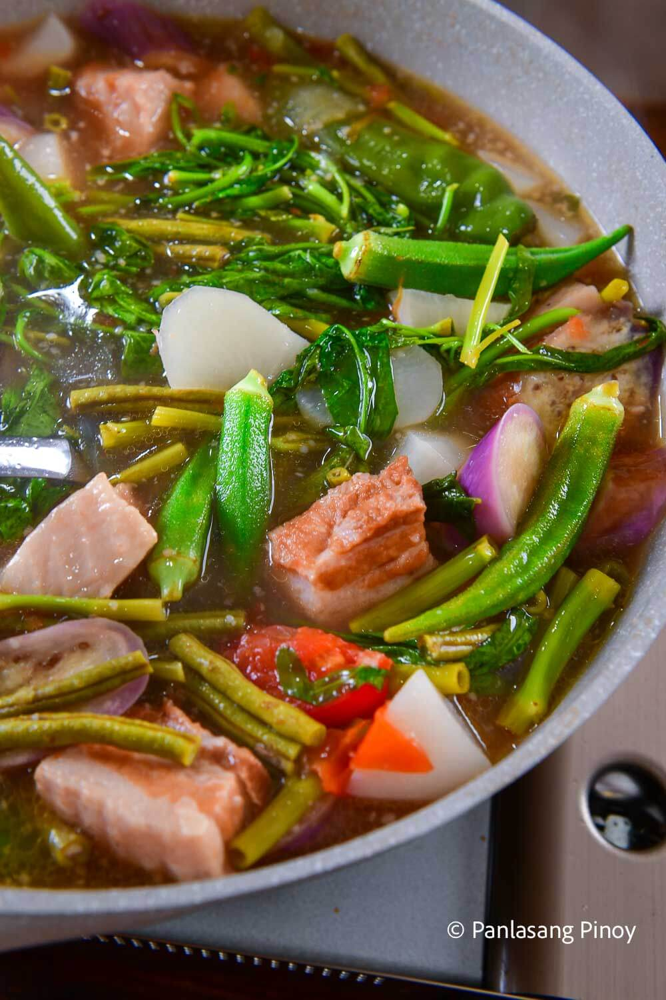

Pork Sinigang, also called sinigang na baboy, is a Filipino sour soup with pork in tamarind broth and vegetables added in batches at the end. The name comes from the Tagalog word sigang, which means to stew. Sinigang is a cooking method more than a single dish. The protein can change to beef, fish, or shrimp.
The pork version is what most Filipinos mean when they say sinigang without saying which kind. The chicken version is called sinampalukang manok when made with young tamarind leaves. In 2021, TasteAtlas named sinigang the best vegetable soup in the world. It is also mentioned alongside adobo as a candidate for the unofficial national dish of the Philippines.